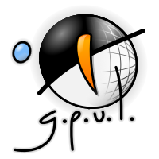
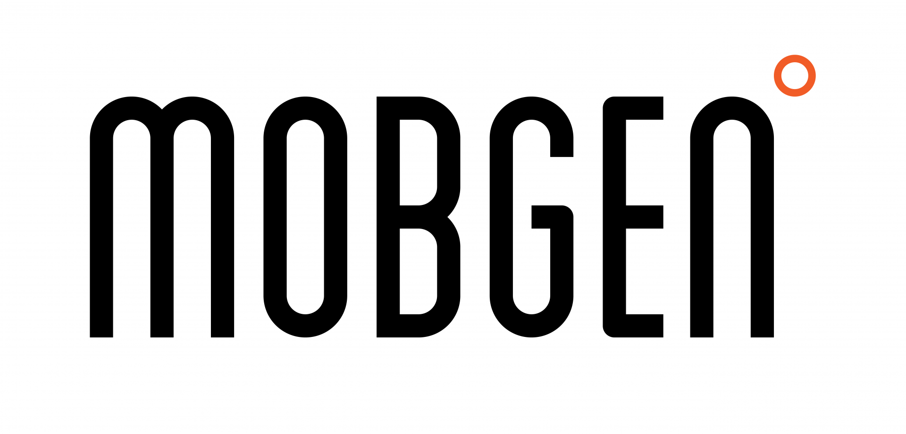
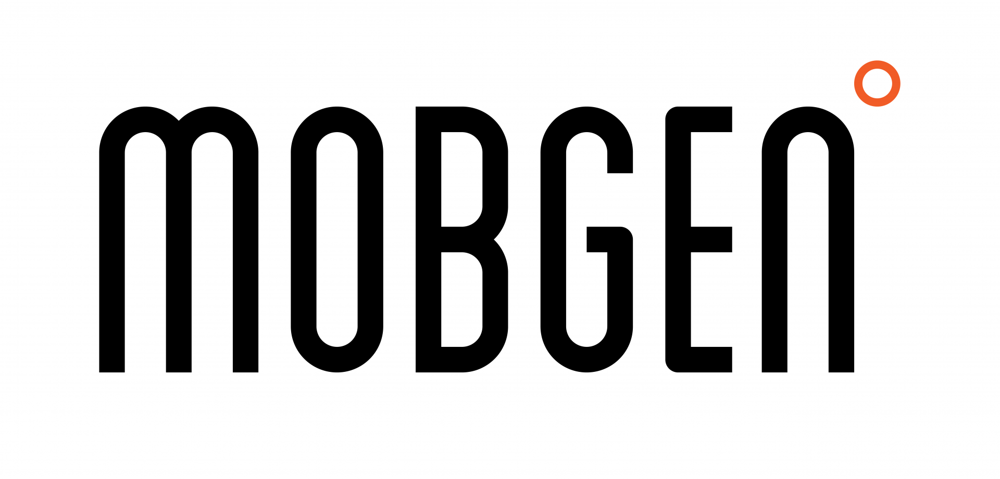

Software Libre, concursos y TFG
¿Que me aportan?

castrinho8.github.io/free-software-competitions
Creative Commons Atribución-Compartir igual 4.0 Internacional.

Pablo Castro Valiño
@castrinho18
Estudiante de Ingeniería informática
Secretario de GPUL



 

Intro al Software Libre
¿Por qué liberar mi TFG/TFM?
Empezar de cero o contribuir
Concursos y demás fregados
¿Y ganar dinero con el SL?
1. Intro al Software Libre
Usarlo para lo que queiras
Ver el código e incluso modificarlo
Distribuir copias
Modificarlo y distribuirlo modificado
Software Libre
LibreOffice, Firefox, Wordpress, CartoDB
Footprints of Spain’s tourists in Summer 2014
Hardware Libre
BQ, OSVehicle, OpenRov
Conocimiento Libre
Wikimedia, EMT
Colaborar y no solo competir, está haciendo a la industria TIC crecer como a ninguna otra
Todo el mundo libera código
...
Un ejemplo

Speech - Vision
Otro

Who is using OpenStack?


...
It's slightly inaccurate to say that "open source is the future."
Open source has already won
2. ¿Y por qué liberar mi TFG/TFM?
El futuro profesional de muchos
Consultoria
Indra, Everis y demás cárnicas
Startups y emprender
Lo que te cuentan
La realidad
Consejos
- Aprendes mucho y de lo que quieres
- Conoces gente muy interesante
- Hazlo con xeito
- Curras muchiiisimo
- ¡Cuidado con las subvenciones!
- Emprender no es happy world
Aspira a trabajar donde te valoren
Horarios flexible, teletrabajo, sin traje, formación de verdad, empresa horizontal...
Igalia, CartoDB, Valve...
Hay sitios intermedios que también molan para empezar
Imatia, Trabe, Trileuco, Mobgen...
"Para currar en un sitio de verdad
¡Hay que ser un poco hacker!"
La carrera
"El mundo ya está lleno de gente que se limitó a aprobar asignaturas, incluso con buena nota".
"El expediente sólo sirve para que te den becas"
2.1 GitHub/GitLab es tu nuevo currículum
Publica tu TFG, prácticas, presentaciones...
Para las empresas buenas, es lo único que importa
2.2 Dale utilidad al proyecto
Colabora en mejorar la tecnología
2.3 Diferénciate de la mayoría
Muchos no liberan por desconocimiento o pereza
Un ingeniero tiene que saber de licencias
2.4 Favorece las buenas prácticas
Tests, Continuous Integration, Continuous Delivery,
buena documentación, issues ...
2.5 Hay premios y concursos de Software Libre
Resumen
GitHub/GitLab -> Tu curriculum
Darle uso al proyecto
Se valora positivamente, algo diferente
Favorece las buenas prácticas
Concursos y premios
...
3. Empezar de cero o contribuir
3.1 Quiero liberar mi proyecto de cero
Publicar el código no basta -> por defecto todo es privativo
Licencia
- Permisivas
- MIT
- APACHE License
- MPL, Mozilla Public License
- BSD, Berkeley Software Distribution
- Restrictivas
- GPL y derivadas, GNU General Public License
- CreativeCommons (permisivas o restrictivas)
Ten en cuenta las licencias de las librerías que usas
Archivo LICENSE + licencia en cada archivo
Link interesante para escoger licencia
CLA
Contribuidores ceden derechos a un ente
Consejos generales
- Usa las issues
- Documenta para que sea facil contribuir (README, wiki, API...)
- README: Requirements, run, contribute...
- Publicítate: Blog, landing page, listas de correo de otros proyectos, hackathones, prensa...
- Haz versiones (git tag)
- Tests + Integración continua (Travis/GitLab CI)
- Busca contribuidores
3.2 Quiero contribuir a un proyecto
Escoger un proyecto
GitHub
GSOC
Fundaciones como Apache o Mozilla
...
¿Cómo contribuir?
- Ver si hay documentación/README/wiki de cómo contribuir
- Abrir una issue contando lo que echas en falta
- Hacer un fork del proyecto
- Desarrollar tu proyecto
- Pull Request (o como se llame)
- Esperar a que la acepten
Licencias y CLA suelen estar decididos
4. Concursos y demás fregados
CUSL
~300 € + 4 días en Sevilla
Certamen de proyectos libres UGR
- 650 €
- 500 €
- 350 €
Premio ao Mellor Proxecto Universitario con Licenza Libre
OSL - GPUL
- 1.500 €
- 750 €
Summers of Code

2.200$ - 6.600$ (3 meses)
Workflow
- Escoge organización y proyecto
- Métete en sus listas de correo + IRC
- Corrige pequeños bugs
- Busca mentor
- Propuesta (se pueden hacer varias)
Algún consejo
- Usa GNU/Linux
- Git + inglés
- Véndete bien a tu mentor
- Foco -> pocas propuestas

5.500$ ~(cada 6 meses, outreachy dura 3-4)
- Para grupos poco representados en las TIC
- Programación, diseño, documentacion...
- Similar al GSOC
¿?$ (Julio - Septiembre)
- Solo para chicas
- Por parejas de la misma ciudad
- Puedes contribuir en empresas

4.000 € (Junio - Agosto)
5. ¿Y ganar dinero con el SL?
SaaS
SL como marketing
Core libre + plugins
Versión free y enterprise
Consultoria - Expertise
Ser partner
Filosofía maker
Open data
Más info en la charla de Igalia
thanks!
@castrinho18 | Pablo Castro
pcastro@gpul.org